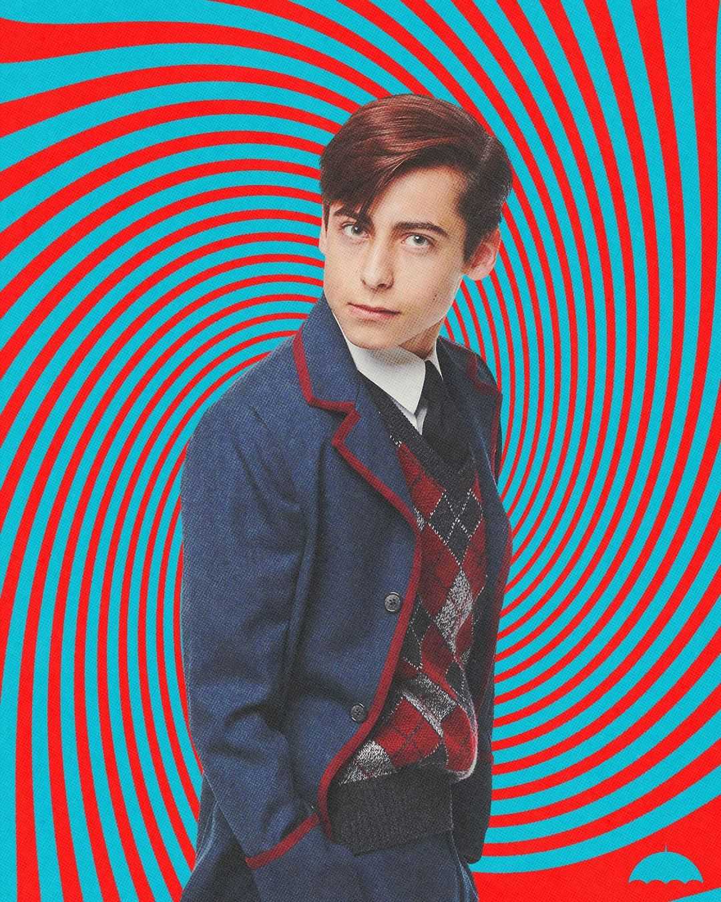

 The Boy’ tiene un pasado misterioso y, por el momento, no conocemos su nombre real. Es el encargado de destruir el apocalipsis gracias a sus poderes y puede teletransportarse a cortas distancias y viajar en el tiempo. Aunque esta última habilidad aún no la domina del todo. A lo largo de la trama iremos conociendo más detalles de este enigmático superhéroe.Esto porque es quién le advierte a sus hermanos que el apocalipsis amenaza con terminar al mundo tan sólo ocho días después de su regreso al “presente”.Sus poderes son básicamente dos: teletransportarse a cortas distancias y viajar por el tiempo, aunque esta última habilidad no es algo que domina completamente.Tras una discusión con su padre, que no le permite desarrollar sus poderes por miedo, acaba realizando un salto temporal hacia el futuro, donde la civilización ha caído y es el único ser humano vivo del planeta.Allí queda atrapado durante décadas sobreviviendo sólo y perdiendo ligeramente la cabeza. Consigue volver a la actualidad durante el funeral de su padre, y aunque conserva el cuerpo de un niño de 12 años, es en realidad mucho mayor y actúa como el anciano que es. Es perseguido por dos matones, Cha Cha y Hazel,quienes intentan darle muerte para que el tiempo siga su flujo y el apocalipsis se concrete tal y como señala “La Comisión” para la que trabajan. Aunque trata de resolver sus problemas sólo, no es capaz y acaba recurriendo a sus hermanos, a los que les cuenta la verdad.Quienes le persiguen pertenecen a una organización que viaja en el tiempo para mantener las líneas temporales intactas, aunque eso signifique intervenir directamente.Número Cinco perteneció un tiempo a ella, durante su desaparición, pero acabó intentando destruirla para poder volver y evitar así el fin del mundo que se desatará en unos días.
| NÚMERO SIETE | ||||||||
|---|---|---|---|---|---|---|---|---|
|
Nombre: Vanya Hargreeves, conocida como Violín Blanco
Nacionalidad:Rusa
Edad: 30 años
Nacimiento: 1 de octubre de 1889
Habilidad: Aunque al empezar la temporada no tiene ninguno, acaba siendo la más poderosa de sus hermanos gracias a una fuerza destructiva que controla con su violín.
|
TEMPORADAS
|
|||||||
Interpretada por Ellen Page, Vanya es uno de los personajes más trascendentales de la serie. En los orígenes de la academia, Vanya era la única hermana sin poderes. Sin embargo, con el paso del tiempo, desarrolló otras aptitudes.Tiempo después consigue concentrarse y hacer que la energía de su alrededor vibre, lo que le permite destruir o controlar cualquier objeto cercano. Siempre fue la excluida, la rechazada. No la dejaban participar en las misiones ya que "era ordinaria" según su padre. La verdad es que era la más poderosa de los 7, y al señor Reginald le daba miedo, por lo que decidió que Allison utilizara sus poderes en ella y convencerla de que no tenía nada de especial. Cuando se fue de la Academia, escribió un libro con todos los secretos de su familia "my life as number seven" o "mi vida como la número siete", que contaba todos los secretos de su familia, por lo que sus hermanos se enojaron con ella y no volvieron a hablarle. Como ella siempre fué la rechazada, aprendió a tocar el violín a una muy corta edad, convirtiéndose en su pasión. Tuvo relación con "Leonard Peabody" , aunque en el comic se demuestra que tuvo un viejo romance con número dos. |
Temporada 1
Toda la vida Vanya ha sido desplazada por sus hermanos y padre debido a que no tenía poderes. Cuando abandonó la casa familiar,irá, público un libro autobiográfico que dejó al resto de su familia en muy mal lugar, esto hace que sus hermanos dejen de tener relación con ella.Es una habilidosa violinista y toma medicación desde pequeña para controlar sus nervios y ansiedad, se siente realmente sola. Conoce entonces a un hombre de su edad que la admira y cree en ella, comenzando una relación con él.Animada por su nuevo novio, deja la medicación y con ello comienza a sacar a la luz sus poderes. Descubrimos que por miedo a que no pudiera controlarlos, Sir Reginald la oculta su verdadera habilidad y la médica para impedir que pueda desarrollarse. Así vemos que ella será la causante del fin del mundo, todo por culpa de su novio, un hombre resentido por las palizas de su padre y por no haber podido pertenecer a La Umbrella Academy. Usando su violín, Vanya desencadena su poder y acaba con todo a su alrededor, pero es finalmente detenida por sus hermanos.
|
Temporada 2
La segunda temporada de The Umbrella Academy fue estrenada en la plataforma de entretenimiento más famosa del mundo, en la cual Vanya Hargreeves, interpretada por Ellen Page, muestra un cambio radical a lo que vivió en los episodios anteriores.
En un cambio radical a las historias de la autoría de Gerard Way y Gabriel Ba, Vanya se muda a una granja donde vive junto en una granja con una mujer llamada Sissy, la cual tiene esposo e hijo.Eso no le impide para que ambas inicien una relación romántica, lo que le hace cambiar su personalidad de estar reprimida a ser una mujer más animada en la segunda temporada de The Umbrella Academy, algo de lo que habla Ellen Page.
“Esto es como un punto de partida completo y una oportunidad para que alguien simplemente sienta y explore exactamente quiénes son”, explicó la actriz en entrevista al sitio Gizmodo.Ellen Page no oculto su emoción por darle un giro a su personaje, al otorgarle una oportunidad de conocer el amor
“Estamos teniendo una aventura, llámalo así, mientras estoy viviendo con el esposo y el niño… En términos de que es la base de la historia de Vanya esta temporada, y de crear este mundo increíble en torno a esa parte, tener una gran parte del espectáculo y la vida de Vanya fue emocionante para mí”.
|
||||||